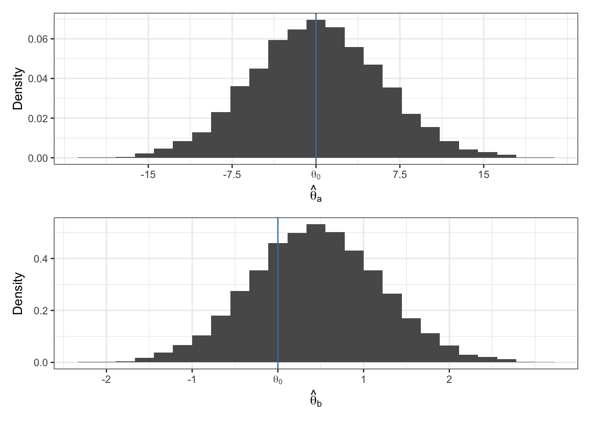
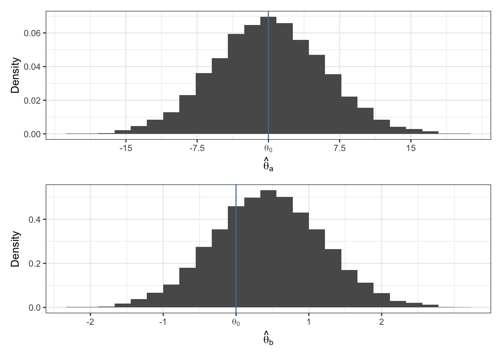

set.seed(360)
x = vector()
for (i in 1:100) {
y = rnorm(10)
x = append(min(y), x)
}
hist(x, freq = FALSE)
abline(v = mean(x), col= "steelblue", lwd = 4)
cat("The variance of x is ", round(var(x), 3))The variance of x is 0.291A point estimator of an unknown parameter \(\theta\) is a function that converts data into a single element of parameter space \(\Theta\).
Example: imagine \(\theta\) is the population mean. The following are each point estimators of \(\theta\):
It is convention to write the population parameter as a Greek character and the estimator as the same Greek character, but with a “hat”. For example, \(\theta\) is the parameter and \(\hat{\theta}\) is the estimator.
Sampling properties of a point estimator refer to the estimator’s behavior under hypothetical repeatable surveys or experiments.
Three common sampling properties of estimators we will see again and again are:
Before we discuss bias, variance and mean squared error of an estimator, it’s important to understand that an estimator is a statistic (function of the data) and therefore a random variable. Because of this, estimator’s have a sampling distribution.
Exercise: What does the example below show? What is x?
set.seed(360)
x = vector()
for (i in 1:100) {
y = rnorm(10)
x = append(min(y), x)
}
hist(x, freq = FALSE)
abline(v = mean(x), col= "steelblue", lwd = 4)
cat("The variance of x is ", round(var(x), 3))The variance of x is 0.291In the rest of these notes, let \(\theta_0\) be the true value of the population parameter \(\theta\).
Bias is the the difference between the expected value of the estimator and the true value of the parameter.
\(E[\hat{\theta} | \theta = \theta_ 0] - \theta_0\) is the bias of \(\hat{\theta}\).
If \(E[\hat{\theta} | \theta = \theta_0] = \theta_0\), then we say \(\hat{\theta}\) is an unbiased estimator of \(\theta\).
If \(E[\hat{\theta} | \theta = \theta_0] \neq \theta_0\), then we say \(\hat{\theta}\) is a biased estimator of \(\theta\).
Exercise: Imagine \(\hat{\theta}_a\) and \(\hat{\theta}_b\) are two different estimators of \(\theta\). The true value of \(\theta\) is \(\theta_0 = 0\). The sampling distributions of the two estimators are given below. Which estimator do you prefer?

Recall: variance is average squared distance from the mean. In this context, the variance of an estimator refers to the variance of the sampling distribution of \(\hat{\theta}\). We write this mathematically,
\[ Var[\hat{\theta} | \theta_0] = E[(\hat{\theta} - m)^2 |\theta_0] \]
where \(m = E[\hat{\theta}|\theta_0]\).
While it may seem desirable to have an estimator with zero bias, the estimator may still be far away from the true parameter value if the variance is too large. The mean squared error quantifies how close an estimator is to the true parameter value.
Mean squared error (MSE) is (as the name suggests) the expected value of the squared difference between the estimator and true parameter value. Equivalently, MSE is the variance plus the square bias of the estimator.
\[ \begin{aligned} MSE[\hat{\theta}|\theta_0] &= E[(\hat{\theta} - \theta_0)^2 | \theta_0]\\ &= Var[\hat{\theta} | \theta_0] + Bias^2[\hat{\theta}|\theta_0] \end{aligned} \]
Suppose you wish to make inference about the average bill length of Chinstrap penguins.
You make the modeling assumption that \(Y\), the bill length of a penguin is normally distributed, i.e. \(Y \sim N(\theta, \sigma^2)\) and you set up a conjugate prior as we’ve done before.
One can then show that the posterior mean estimator of \(\theta\) is
\[ \hat{\theta}_b = E[\theta | y_1,\ldots y_n] = \frac{n}{\kappa_0 + n} \bar{y} + \frac{\kappa_0}{\kappa_0 + n} \mu_0 = w\bar{y} + (1-w) \mu_0 \]
Exercise: compare \(\hat{\theta}_b\) to the estimator \(\hat{\theta}_e = \bar{y}\). Compute the expected value of each estimator, which one is biased? Compute the variance of each estimator. Which has lower variance?
Suppose you know that you know Gentoo penguins are closely related to Chinstrap penguins. Previously, you’ve measured the bill length of three Gentoo penguins and found their mean bill length to be 46.2. Accordingly, you set \(\mu_0 = 46.2\).
Suppose (for illustrative purposes) that you know the true population mean and variance for Chinstrap penguin bill length,
\[ \begin{aligned} \theta_0 &= 48.8\\ \sigma^2 &= 3.3. \end{aligned} \]